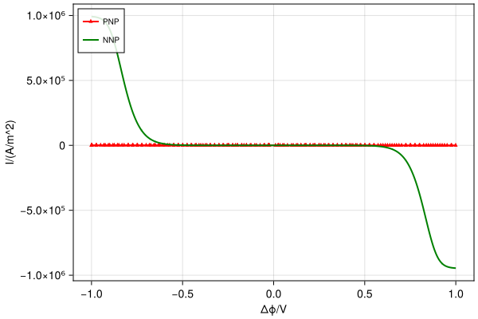
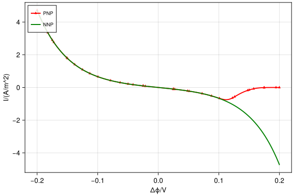
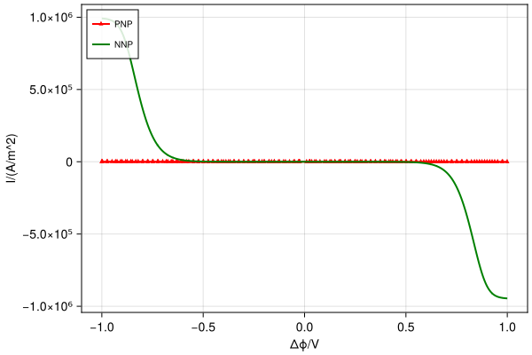
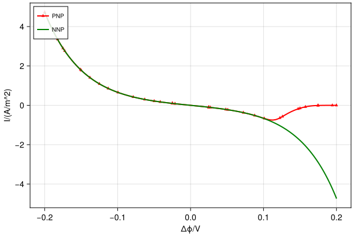

Fe redox half cell
I-V sweep for $Fe^{2+} \to Fe^{2+} + e^-$
  
 
Methods called:
module Example110_Fe23Cell
using LessUnitful
using ExtendableGrids, GridVisualize
using VoronoiFVM
using LiquidElectrolytes
using Colors
using StaticArrays
using DoubleFloats
function main(;
nref = 0,
compare = false,
eneutral::Bool = false,
voltages = (-1:0.025:1) * ufac"V",
dlcap = false,
R0 = 1.0e-10,
molarities = [0.001, 0.01, 0.1, 1],
upwindflux! = LiquidElectrolytes.μex_flux!,
xmax = 1,
κ = 10.0,
Plotter = nothing,
new = false,
valuetype = Double64,
kwargs...,
)
@local_phconstants N_A e R ε_0
F = N_A * e
@local_unitfactors cm μF mol dm s mA A nm
defaults = (;
max_round = 3,
tol_round = 1.0e-9,
verbose = "",
reltol = 1.0e-8,
tol_mono = 1.0e-10,
)
kwargs = merge(defaults, kwargs)
hmin = 1.0e-1 * nm * 2.0^(-nref)
hmax = 1.0 * nm * 2.0^(-nref)
L = 20.0 * nm
X = geomspace(0, L, hmin, hmax)
grid = simplexgrid(X)
R0 = R0 * ufac"mol/(cm^2*s)"
Δg = 0.0
β = 0.5
ihplus = 1
ife2 = 2
ife3 = 3
iso4 = 4
function halfcellbc(f, u, bnode, data)
(; nc, Γ_we, Γ_bulk, ϕ_we, ip, iϕ, v, v0, RT, barv) = data
bulkbcondition(f, u, bnode, data; region = Γ_bulk)
if bnode.region == Γ_we
if !data.eneutral
boundary_dirichlet!(f, u, bnode; species = iϕ, region = Γ_we, value = ϕ_we)
end
c0, barc = c0_barc(u, data)
μfe2 = chemical_potential(u[ife2], barc, u[ip], barv[ife2], data)
μfe3 = chemical_potential(u[ife3], barc, u[ip], barv[ife2], data)
A = (μfe2 - μfe3 + Δg - data.eneutral * F * (u[iϕ] - ϕ_we)) / RT
r = rrate(R0, β, A)
f[ife2] -= r
f[ife3] += r
end
return nothing
end
celldata = ElectrolyteData(;
nc = 4,
z = [1, 2, 3, -2],
eneutral,
κ = fill(κ, 4),
Γ_we = 1,
Γ_bulk = 2,
upwindflux!,
rlog = RLog(eps(valuetype))
)
(; iϕ::Int, ip::Int) = celldata
celldata.c_bulk[ihplus] = 1.0 * mol / dm^3
celldata.c_bulk[ife2] = 0.1 * mol / dm^3
celldata.c_bulk[ife3] = 0.1 * mol / dm^3
celldata.c_bulk[iso4] = 0.75 * mol / dm^3
@assert isapprox(celldata.c_bulk' * celldata.z, 0, atol = 1.0e-12)
cell = PNPSystem(grid; bcondition = halfcellbc, celldata, valuetype)
# Compare electroneutral and double layer cases
if compare
celldata.eneutral = false
result = ivsweep(cell; voltages, store_solutions = true, kwargs...)
currs = LiquidElectrolytes.currents(result, ife2)
celldata.eneutral = true
nresult = ivsweep(cell; voltages, store_solutions = true, kwargs...)
ncurrs = LiquidElectrolytes.currents(nresult, ife2)
@show length(result.voltages), size(currs, 1)
@show length(nresult.voltages), size(ncurrs, 1)
vis = GridVisualizer(;
Plotter,
resolution = (600, 400),
clear = true,
legend = :lt,
xlabel = "Δϕ/V",
ylabel = "I/(A/m^2)",
)
scalarplot!(
vis,
result.voltages,
-currs,
color = "red",
markershape = :utriangle,
markersize = 7,
markevery = 10,
label = "PNP",
)
scalarplot!(
vis,
nresult.voltages,
-ncurrs,
clear = false,
color = :green,
markershape = :none,
label = "NNP",
)
return reveal(vis)
end
# Calculate double layer capacitances
if dlcap
vis = GridVisualizer(;
Plotter,
size = (500, 300),
legend = :rt,
clear = true,
xlabel = "φ/V",
ylabel = "C_dl/(μF/cm^2)",
)
hmol = 1 / length(molarities)
for imol in 1:length(molarities)
color = RGB(1 - imol / length(molarities), 0, imol / length(molarities))
celldata.c_bulk.= molarities[imol]
result = dlcapsweep(cell; voltages, kwargs...)
scalarplot!(
vis,
result.voltages,
result.cdl / (μF / cm^2);
color,
clear = false,
label = "$(molarities[imol])M",
)
end
return reveal(vis)
end
# Full calculation
result = ivsweep(cell; store_solutions = true, voltages, kwargs...)
currs = LiquidElectrolytes.currents(result, ife2)
testresult = sum(currs)
sol = LiquidElectrolytes.voltages_solutions(result)
xmax = xmax * nm
xlimits = [0, xmax]
vis = GridVisualizer(; Plotter, resolution = (1200, 400), layout = (1, 5), clear = true)
aspect = 3.5 * xmax / (result.voltages[end] - result.voltages[begin])
scalarplot!(
vis[1, 1],
currs / (mA / cm^2),
result.voltages,
markershape = :none,
title = "IV",
xlabel = "I",
ylabel = "ϕ",
)
scalarplot!(
vis[1, 2],
cell.vfvmsys,
sol;
species = ife2,
aspect,
scale = 1.0 / (mol / dm^3),
xlimits,
title = "Fe2+",
colormap = :summer,
ylabel = "ϕ",
)
scalarplot!(
vis[1, 3],
cell.vfvmsys,
sol;
species = ife3,
aspect,
scale = 1.0 / (mol / dm^3),
xlimits,
title = "Fe3+",
colormap = :summer,
ylabel = "ϕ",
)
scalarplot!(
vis[1, 4],
cell.vfvmsys,
sol;
species = iϕ,
aspect,
scale = 1.0 / (mol / dm^3),
xlimits,
title = "ϕ",
colormap = :bwr,
ylabel = "ϕ",
)
scalarplot!(
vis[1, 5],
cell.vfvmsys,
sol;
species = ip,
aspect,
xlimits,
title = "p",
colormap = :summer,
ylabel = "ϕ",
)
return isnothing(Plotter) ? testresult : reveal(vis)
end
function runtests()
main() ≈ -3.6857861517e+05
end
p = main(; compare = true, Plotter, voltages = -0.2:0.025:0.2) # hide
endThis page was generated using Literate.jl.